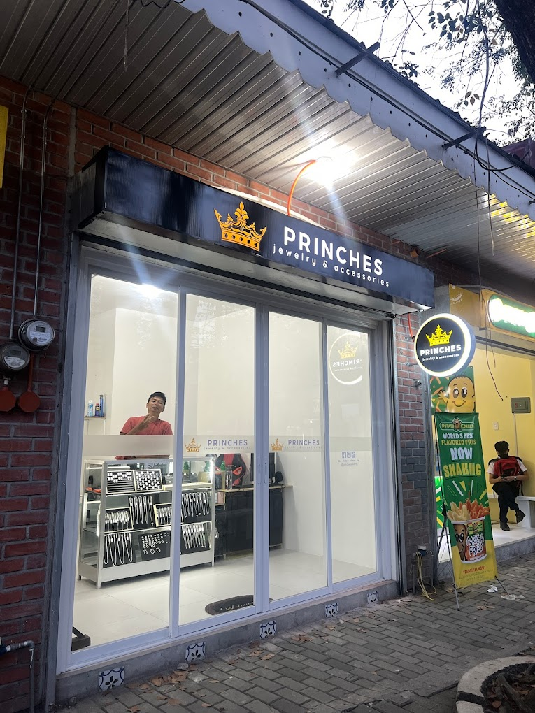
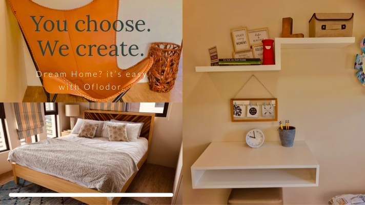
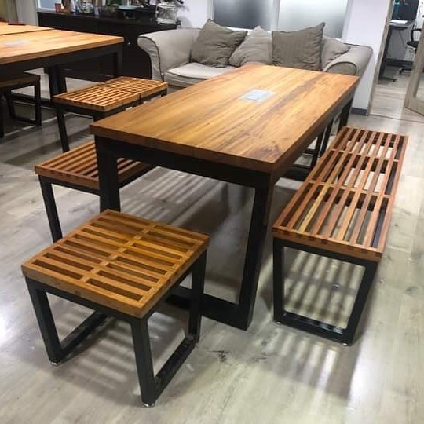
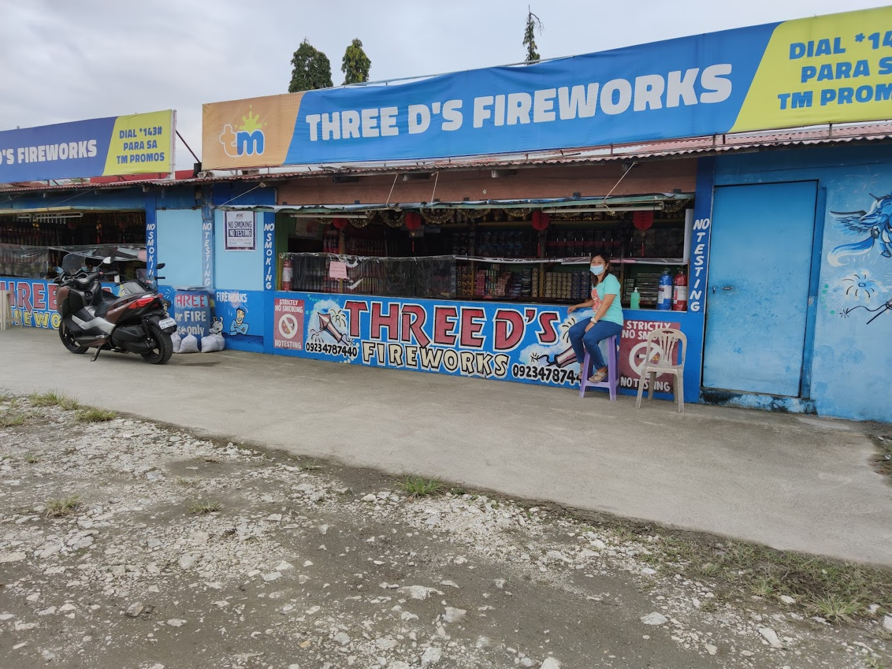
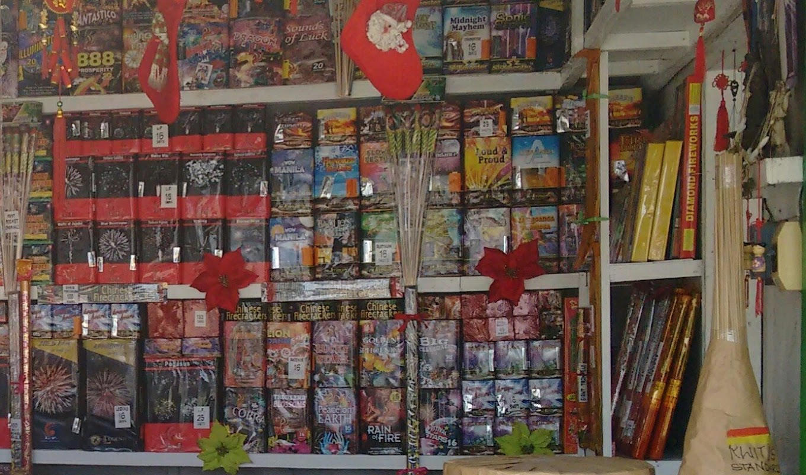

Bulacan Chamber of Commerce
☰
Home
Discover
Directory
Join
×
Discover Industries in Bulacan
RJ's Jewelries

Princess Jewelry and Accessories

Oflodor Customized Furniture

AVMake Furniture Store

Three D's Fireworks

Eat Bulaga Fireworks